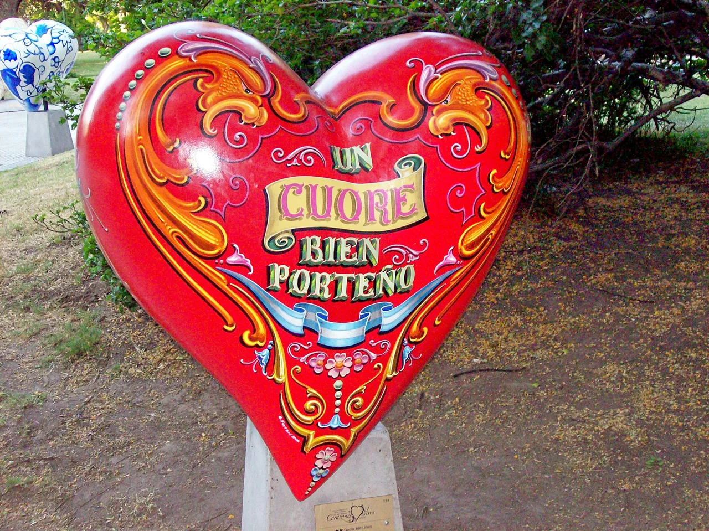
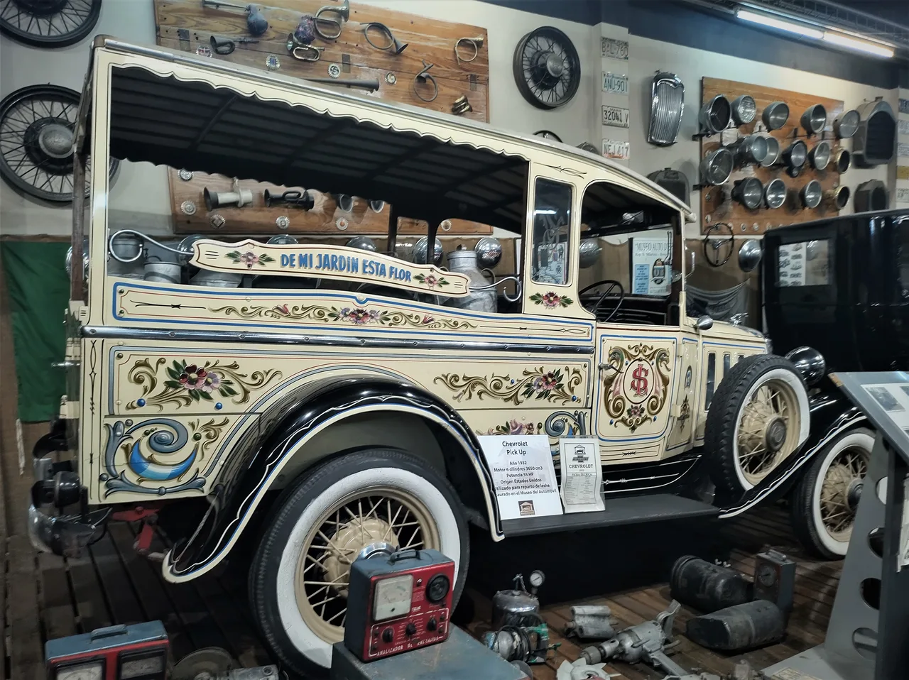

En los carros de verdulero de principios del siglo veinte y en las carrocerías de los colectivos porteños, una cuadrilla de pintores inmigrantes inventó un alfabeto de flores, dragones y refranes que desafió la rectitud moderna. Una indagación sobre el fileteado porteño, la brocha de cerda larga y la pasión por el adorno popular.
Jorge Luis Borges, en uno de sus ensayos juveniles más memorables dedicado a las inscripciones de los carros de la orilla porteña, observó que el habitante de Buenos Aires padece una extraña y hermosa debilidad por la literatura ambulante y el ornamento desafiante. Aquellos carros de verdulero tirados por caballos percherones que recorrían los barrios de San Telmo, Parque Patricios o Pompeya a principios del siglo veinte no se conformaban con ser simples cajas de madera sobre ruedas de hierro: estaban pintados de arriba abajo con un derroche de volutas, cintas con los colores patrios, dragones alados, soles con rostro humano y sentencias morales que convertían el transporte de papas y lechugas en un desfile triunfal de la imaginación.

A ese arte singular, nacido en las fábricas de carruajes por obra de jóvenes pintores inmigrantes italianos como Cecilio Pascarella, Salvador Venturo y Vicente Brunetti, los porteños lo bautizaron con una palabra menuda y exacta: el fileteado. El nombre proviene del latín filum, que significa hilo o línea delgada; pero en el asfalto del Río de la Plata el filete dejó de ser una simple línea recta de encuadre para transformarse en una curva elástica, sensual y arremolinada que se enrosca sobre sí misma como el humo de un cigarrillo rubio o el corte de una pareja de bailarines en la baldosa del tango.
Para comprender la maestría del fileteador es preciso observar sus herramientas, que se apartan radicalmente de los pinceles de bellas artes. El artesano empuña un pincel de pelo de oreja de buey de cerda larguísima —de cuatro o cinco centímetros de largo montada sobre un cabo corto de madera— que se carga de esmalte sintético espeso rebajado con una pizca de aguarrás mineral. La longitud del pelo permite que el pincel retenga una cantidad generosa de pintura y trace curvas continuas de dos metros de longitud en un solo ademán suspendido, sin necesidad de levantar la mano para volver a untar el tintero.
La gramática visual del fileteado se compone de un repertorio botánico y mitológico que los artesanos heredaron de los tratados renacentistas y del barroco italiano, pero adaptado a la picardía de la esquina rioplatense. En el centro de la composición casi siempre brota una hoja de acanto, esa hoja espinosa del Mediterráneo que aquí se vuelve carnosa y ondulada; a los lados se enroscan espirales vegetales que rematan en flores de cinco pétalos, pájaros imaginarios, cintas albicelestes que flamean al viento y el rostro sonriente de Carlos Gardel enmarcado en un óvalo de perlas pintadas.
Pero el secreto que otorga al fileteado su contundencia visual es la técnica del relieve fingido, esa trampa óptica que los pintores llaman el claroscuro o el volumen. Ninguna línea en el fileteado es plana: el artista pinta primero el color base en tonos planos; luego, con un esmalte más oscuro, arroja una sombra profunda en la parte inferior de la curva; y finalmente, con un toque seco de blanco puro en el lomo superior, aplica la llamada gota de luz. En cuestión de segundos, la pintura parece despegarse de la chapa de acero del vehículo y convertirse en una moldura de plata o madera tallada que invita a ser palpada con la yema de los dedos.

Cuando los carros de caballos fueron prohibidos por las ordenanzas de tránsito a mediados del siglo veinte, el fileteado no murió: emigró inmediatamente a la carrocería del invento más porteño de todos, el colectivo de pasajeros. Los colectivos de los años sesenta y setenta eran verdaderas catedrales góticas populares que recorrían la ciudad exhibiendo en los espejos retrovisores, en los guardabarros y en la compuerta trasera frases que el chofer elegía para dialogar con el destino: Qué me miras con rencor si el coche no es del patrón; Tus celos me dan risa; La ilusión de mi vieja. El vehículo se convirtió así en el blasón andante de la clase trabajadora.
En 1975, en uno de esos accesos de estupidez higienista que periódicamente asaltan a los gobiernos autoritarios, la Secretaría de Transporte prohibió formalmente el fileteado en los colectivos de Buenos Aires, argumentando que las líneas y los colores confundían a los usuarios y restaban sobriedad a la flota metropolitana. Aquel decreto mezquino hirió de muerte a los talleres carroceros, pero no pudo con la terquedad del pueblo. Los fileteadores llevaron su arte a los carteles de fonda, a las guitarras criollas, a las botellas de vino patero y a las vidrieras de las carnicerías, esperando pacientemente a que la barbarie oficial pasara de largo.
Hoy en día, el fileteado porteño ha sido declarado Patrimonio Cultural Inmaterial de la Humanidad por la Unesco y los jóvenes de Buenos Aires llenan los talleres de los maestros para aprender a empuñar el pincel de pelo largo. La ciudad moderna, uniforme y cuadriculada, comprende por fin que en esa curva rebelde que se niega a la rectitud geométrica late el alma misma del arrabal: la convicción profunda de que la vida cotidiana es demasiado breve y dura como para resignarse a vivirla sin la alegría insolente del adorno.
Fuentes.
- Borges, Jorge Luis (1930). Evaristo Carriego: Las inscripciones de los carros. Sur.
- Ferrari, Gustavo (2012). El filete porteño: Técnica, historia y maestros del ornamento. Editorial Retiro.
- Genovese, Alfredo (2007). Tratado de fileteado porteño. Sociedad de Letras.
Investigación sobre artes populares y patrimonio gráfico de Buenos Aires.
Fuentes consultadas el 19.11.2026. Análisis e interpretación: RUMMOR. Edición privada para revisión.